SUPER MARIO TRIBUTE
by rob.dll
1985
Super Mario Bros
1986
Super Mario Bros
The Lost Levels
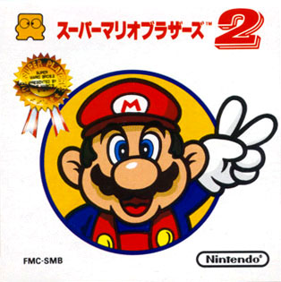
1988
Super Mario Bros 2
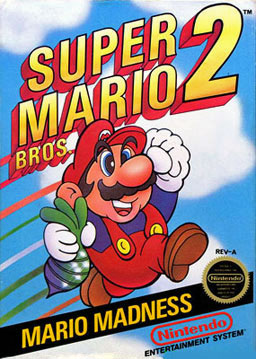
Super Mario Bros 3
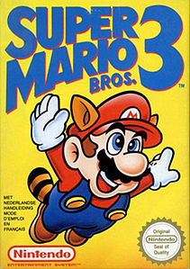
1989
Super Mario Land
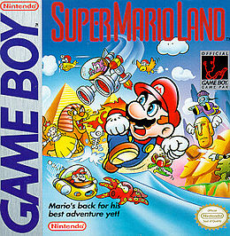
1990
Super Mario World
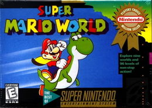
1992
Super Mario Land
6 Golden Coin
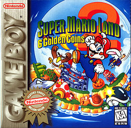
1993
Super Mario All-Stars
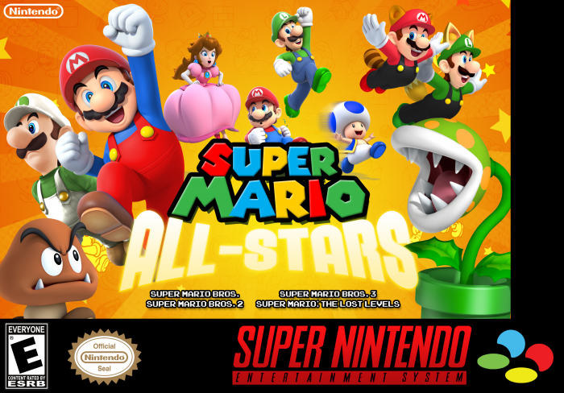
1994
Super Mario
All Star + S.M. World
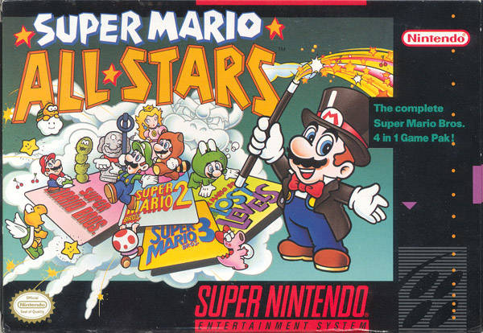
1995
Super Mario World 2
Yoshi's Island
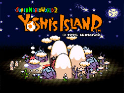
1996
Super Mario 64
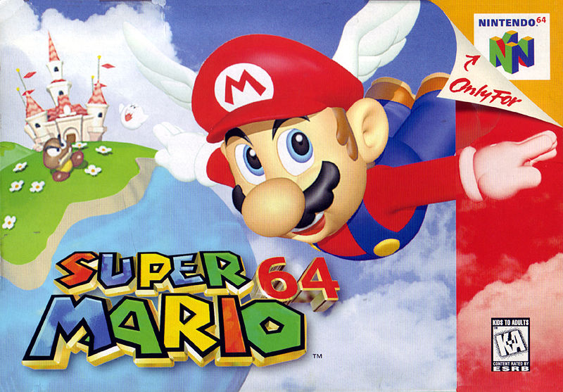
1999
Super Mario Bros Deluxe
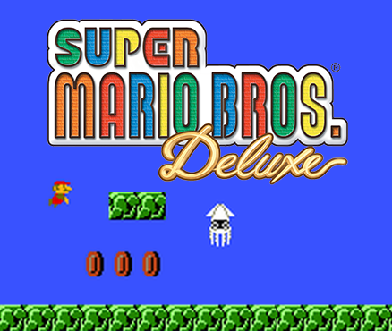
2001
Super Mario Advance
Super Mario Advance 2
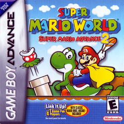
2002
Super Mario Sunshine
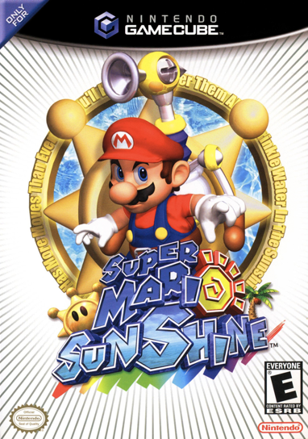
Super Mario Advance 3
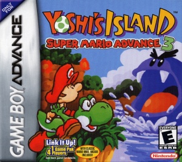
2003
Super Mario Advance 4
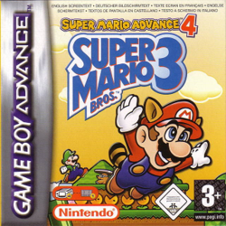
2006
New Super Mario Bros
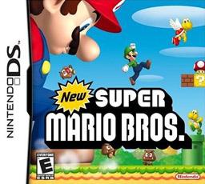
2007
Super Mario Galaxy
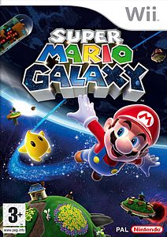
2009
New Super Mario Bros WII
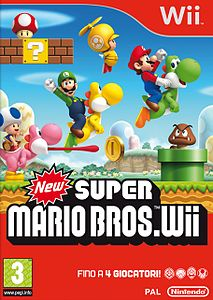
2010
Super Mario Galaxy 2
Super Mario All-Star
25th Anniversary
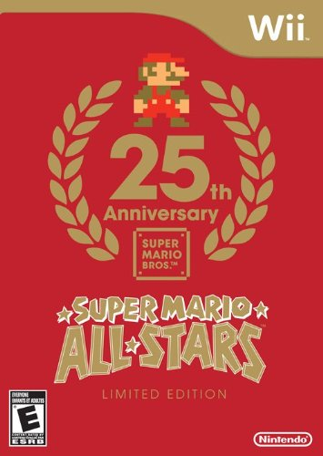
2011
Super Mario 3D Land
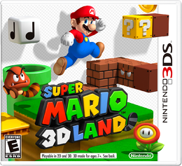
2012
New Super Mario Bros 2
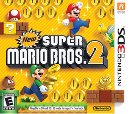
New Super Mario Bros U
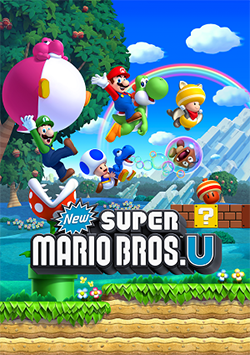
2013
Super Mario 3D World
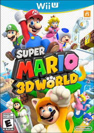
2015
Super Mario Maker
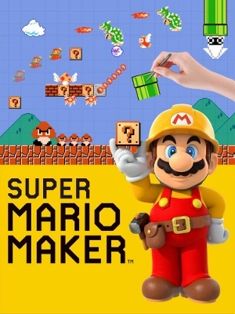
2016
Super Mario Run
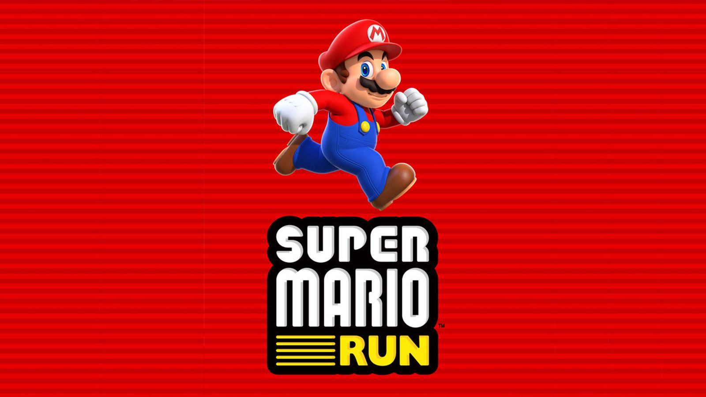